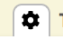

Workflows
To help teams maintain asset collections, EDG workflows provide special views and functions that coordinate multiple users in defined change-management processes.
Users can start workflows for an entire asset collection or for a specific asset in a collection. Multiple workflows can be active at the same time. Changes made in each workflow are isolated from other workflows and are not part of the asset collection until authorized users review, approve, and commit the workflow’s changes back to the “production copy”. To isolate its changes, each workflow has a “working copy” of changes from the production state.
Note
The any includes always refer to other collections’ production copies, never to working copies. In other words, uncommitted changes to an asset collection can not be included into a workflow for another asset collection.
EDG is shipped with a pre-defined workflow template called Basic. Additional workflow templates can be developed for your EDG installation. These templates can implement different process-flows with different scope of applicability. A template determines what users can perform various actions in a workflow:
A template can specify what governance roles should have editor and manager privileges for the associated working copy
A template always specify who can transition a workflow from one state to another. Authorizations for the workflow transition actions can be defined for permission levels (v/e/m) or for governance roles. For an example of such workflow transitions, see the main Workflow View tab for the Basic workflow.
If an asset collection you are working with has any workflow in progress you can access them by clicking on Workflows tab for the collection.
Any changes you will make will stay in the working copy associated with this workflow and will not be visible outside it. The tabs (import, reports,…) for a workflow operate the same as for the production copy but in the scope of the workflow only. Until it is committed to production, changes remain here only.
Starting a Workflow
There are two places in EDG where you can start a workflow by selecting Start Workflow:
When viewing a specific asset in the Editor, user can select Start Workflow from the asset menu.
Start Workflow button is also available on the Workflows tab.
Workflow can be started for a specific asset or for an entire collection if you will be creating a new asset(s) or making changes to multiple assets.
TopBraid EDG Starting a New Workflow About Glossary
Start workflow dialog will let you select a workflow template (if more than one template is available) and provide a short description. TopBraid EDG will auto-generate a unique name for a workflow. If desired, you can override the generated name.
Working in a context of a Workflow
You will always know when you are working in a context of a workflow because the horizontal menu bar on top of asset collection pages will change its color from grey to light yellow.
In a context of a workflow you will see the same tabs as in the context of the asset collection it is performing updates to, although some tabs will be greyed out. For example, you can not start a workflow within a workflow which is why the Workflows tab is greyed out.
To make edits, use the same features as those normally available to you for an asset collection.
You will also see a new tab with a gear icon  on it – shown in the screenshot below. This tab lets you see information about the current state of workflow and lets authorized users move it to the next state.
{kind=link}
TopBraid EDG Starting a New Workflow About Glossary
When you click on the Diagram View link, the page switches to a view that visually depicts the workflow state and transitions. For example, if we, after making changes, click on the Freeze for review link and then switch to the Diagram View, the diagram will look as follows:
TopBraid EDG EDG Diagram View Example
State that a workflow is currently in is shown in the diagram as a green colored box. If you could move a workflow into a next state, the diagram will depict transition actions as green clickable buttons. On the diagram above, you see three possible actions – to approve, to reject and to request further changes by reverting the workflow back to the Uncommitted state.
You can easily navigate from a workflow to the asset collection itself (production copy) by clicking on the icon next to the workflow name.
Rights Entailed by Permission Profiles
Whoever starts a workflow becomes the manager of its working copy, even if that user only had viewer privileges of the asset collection itself. Such user can then make changes in the context of a workflow but cannot commit them to Production because only users with editor privileges for an asset collection can make changes to them.
The same permission profiles of manager, editor and viewer are applicable to production copies and working copies, but the rights they entail are slightly different – as described below:
For an asset collection (production copy)
A viewer of an asset collection can:
view and browse it,
view a history of its changes,
display various reports,
export it in a variety of formats,
enter its usage information,
create tasks, change the status of a task assigned to them and comment on tasks, and
create a workflow copy of it to make changes, which will not be applied back to the production one until the changes are reviewed and committed by an editor or manager of that production asset collection.
An editor has all viewer permissions and can also make changes.
A manager has all editor permissions and can also:
perform operations on the Manage tab (for details, see the Manage View section in the $ModelTypes Utilities),
assign permission profiles and governance roles to others,
save searches and hierarchy views as “default” for a collection.
For a working copy
A viewer of a working copy can:
view and browse it,
view reports of changes contained in it,
view reports of what other working copies will be affected by changes made as part of this particular workflow,
run a report comparing a working copy to the production asset collection,
export data to a variety of formats.
An editor has all viewer permissions and can also make changes.
A manager has all editor permissions and can also:
control permission privileges to a working copy (i.e., grant viewer/editor/manager roles to users) and
if a workflow is based on the Basic template, WF managers can freeze/unfreeze it to prevent/allow changes, e.g., for reviewing, and they can change the status to Approved or Rejected. This is defined in the Basic Workflow template.
Workflow Transitions and Governance Roles
In the Basic Workflow, the state-action transitions (e.g., freezing/resuming, accepting/rejecting, etc.) are defined
in terms of the permission profiles: viewer, editor, and manager.
Workflow templates also allow workflow transitions to be defined in terms of governance roles
(e.g., data steward, subject matter expert, etc.).
Depending on the workflow design, state transitions can also happen automatically e.g., on a timer or as a result of some other event.
Workflow Scope
When you start a workflow, you may be able to select a workflow type from a dropdown if multiple workflow templates
are installed in your EDG system.
Only workflow types applicable to the workflow context will be available for selection.
Otherwise, Basic Workflow is automatically selected.
Workflow templates in EDG can be scoped to be applicable only to a given type of collection or to a given asset type or to a given governance area. This lets users develop different workflows for change management. For example, Review and Approval process for Glossaries can be different from Data Assets.
If no scope is set for a workflow template, it is applicable EDG-wise. The Basic Template has no scope which is why it can be used in all contexts.